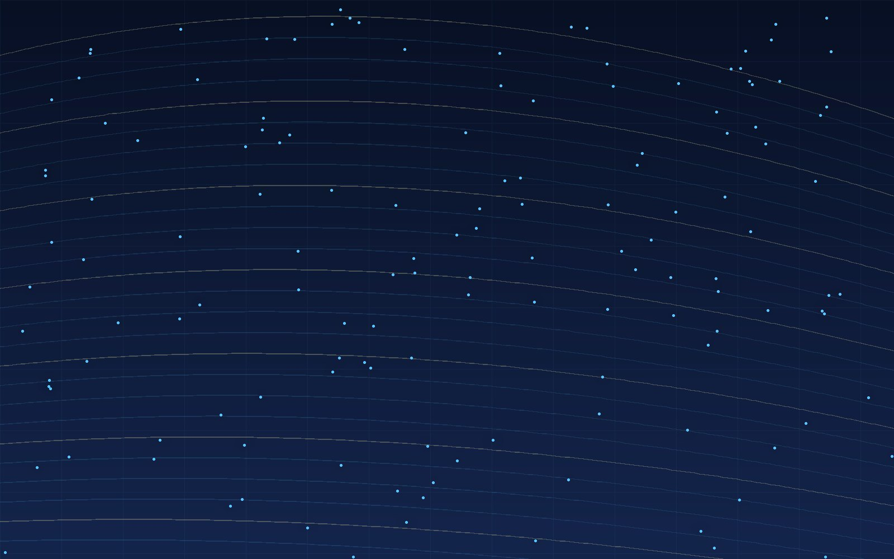

November 2026
The Perception and Robotics Group is founded at USD
The group is establishing a robotics lab in the Department of Computer Science, focused on perception, estimation, and autonomy for machines that operate outside the lab.
We are a research group in the Department of Computer Science. We build perception and estimation systems for robots that operate outdoors, then test them on real hardware.

An autonomous system is limited by its estimate of the world. Our projects combine sensor fusion, mapping, and learned perception, and each one ends in a field deployment rather than a simulation result.
Every project has a physical platform and a field protocol.
Code, datasets, and calibration routines are published where we can.
Undergraduates and graduate researchers own real subsystems.
Each program has its own platforms, students, and field sites. They share mathematics, code, and lab space.
Localization and dense mapping for robots operating in unstructured, GPS-denied environments.
Onboard perception, trajectory generation, and long-endurance flight for small uncrewed aircraft.
Contact-rich control for machines that walk, climb, and manipulate in human-scale spaces.
Models that turn raw sensor streams into the spatial understanding autonomy needs.
Long-duration autonomy in the terrain around San Diego: coastline, canyon, and campus.
November 2026
The group is establishing a robotics lab in the Department of Computer Science, focused on perception, estimation, and autonomy for machines that operate outside the lab.
November 2026
We are recruiting undergraduate and graduate researchers for perception, SLAM, and aerial autonomy projects. Applications are reviewed on a rolling basis.
We are recruiting graduate and undergraduate researchers for Spring 2027. We look for people who have finished something, can work through the mathematics, and can explain what they built.